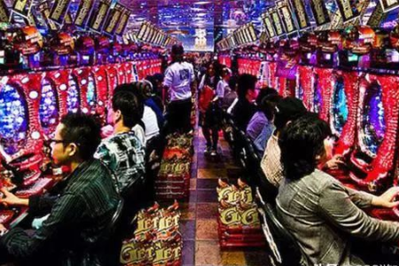

平时混迹于日本ACG领域的朋友应该都对于“柏青哥”和“柏青嫂”这两个名字不会感到陌生，即便是没有自己亲眼见过，但也没少听过这个名字。只要是在日本，无论是影视、动漫还是游戏领域都有其出现过的痕迹。哪怕是稍微了解一点的朋友也知道，所谓“柏青哥”是日本独有的一种赌博机，在当地非常流行，并且机台的主题各式各样无所不有，不管什么题材的游戏和影视作品，在日本也都能改编成“柏青哥”。

时至今日，我们总是能在新闻中见到“XX公司与柏青哥公司合作”，“XX公司被XX柏青哥大厂收购”等等之类的新闻。即便是在现在，仍还有不少一线日本大厂在不断为自家IP推出柏青哥机台，诸如某经典游戏即将高清重置、时隔多年的老IP即将推出新作，但听说平台却是柏青哥，无疑给那些钱包已经掏出来的粉丝们泼了一桶冷水。这次我们就来聊一聊这个“柏青哥”到底是什么，它与电子游戏产业又有什么渊源。
所谓“柏青哥”与“柏青嫂”是日语“パチンコ”与“パチスロ”的谐音翻译，柏青哥是一种以弹珠为主要玩法的街机，而柏青嫂则是我们比较熟悉的角子老虎机，俗称“拉霸”，就是那种拉杆让轮盘拼凑出三个一样的图案即可获奖的赌博机，二者在日本统称为柏青哥。有关柏青哥的历史能够追溯到二十世纪初的日本大正时期的二战之后，早年间的柏青哥机台与美国流行的弹珠台相差不多，而玩法上却大有不同。
我们都知道，弹珠台中通常只有一个球，玩法以避免落入机台下方的洞口，控制挡板将球击回，通过让小球撞击不同的物件以获得高分，而高分则可以允许玩家进行奖品兑换；而柏青哥却与弹珠台完全相反，机台中拥有多个弹珠，玩家要做的是控制发射器发射弹珠，使弹珠按顺序下落到特定的区域即可过的奖励，这些弹珠以个收费，1日元到4日元不等，而机台也不像弹珠台那样呈倾斜状，而是与地面完全垂直，小球是真正意义上的“自由落体”。
相比之下，弹珠台比较依靠技术，只要玩得好，一颗球能够玩上好几轮；而柏青哥则是纯粹的依靠运气，小球在下落时玩家没有任何办法能够控制其走向。早期的柏青哥玩法还算比较简单，只需要设法将弹珠达到机台中的各个洞口即可获得数量不等的弹珠奖励，获得的弹珠即可在店内兑换奖品。
而后来随着时间的推移科技的进步，柏青哥机台的制作越来越花哨，玩法也是越来越多样，整体表现力的提升十分具有吸引力，给人一种极度上瘾的感觉。时至今日，柏青哥店已经成为了日本随处可见的存在，但凡是去日本玩过的人应该会知道，即便是在日本十分盛行的街机厅其实数量也不算多，倒是柏青哥店倒是每走一段就能见到一家，只要不是特别穷苦的地方，基本都会有柏青哥店的存在。
众所周知在日本，赌博也并不算是完完全全的合法项目，就如同国内的彩票一样，能为地方财政带来收入的公营赌博则是合法的，而其他的则都是违法的。而“柏青哥”却并不算是一种公营赌博，那为什么还能被允许呢？从严格的角度上来说，“柏青哥”在日本被归为风俗业的一种，但你如果去日本随便找一个人问“柏青哥是不是赌博”，十个人里能有九个会承认“柏青哥就是赌博”。那么既然柏青哥赢的是弹珠，那么谈何挣钱一说呢？毕竟没有人玩柏青哥是为了看机台那炫目的灯光或是精彩的动画的。
柏青哥处于赌博与风俗之间的灰色地带，既然被人称为赌博那就一定有他自己的道理。柏青哥的中奖概率并不算高，更多时候会有不少钱投入其中打了水漂。毕竟日本禁止金钱赌博因此如果赚到弹珠，则玩家通常会去兑换一些颇有价值（比如黄金饰品）的奖品，随后拿着奖品到柏青哥店附近的礼品收购店去卖掉换成现金。而法律也有明确规定禁止风俗店回购自己曾送出的礼品，柏青哥店会交由第三方专人定期到礼品店将这些礼品收回来以抹消奖品变现的事实，而奖品又可以继续赠送。就这样，一条完整的循环交易链就这样产生了。
在不少人看来，柏青哥也是可以通过眼力与操作来弥补运气上的不足，因此难免胡有人有人想要抱一台柏青哥回家自己慢慢练的想法。但毕竟一台机器的价格十分昂贵，不是一般柏青哥爱好者所能负担的起的，于是乎便出现了主机版的柏青哥电子游戏。柏青哥的电子游戏从FC时期直到今天都一直存在，也囊括了各式各样的主题与玩法，但对于一般玩家来说，这些游戏就如同是“股神通”这种炒股模拟软件一般的存在。其中最为有名的作品则是曾与PS2发售的《实战柏青嫂必胜法！北斗神拳》，最初由于其柏青嫂机台的精妙设计而红极一时，后推出的这款号称“百分百模拟实机”的游戏则是直接突破了百万级销量，束顺带还连带着《北斗神拳》的动画与漫画销量一同上涨。
有柏青哥主题的主机游戏就自然也有主机游戏主题的柏青哥，这其中要数KONAMI与卡普空两家尤为活跃。要知道KONAMI的最大收入来源除了自家的健身房，那就是柏青哥了，KONAMI旗下所有知名IP均有推出过主题柏青哥，比如《恶魔城》与《寂静岭》等。其中最让人吃惊的是KONAMI曾经的当家花旦《合金装备》也有柏青嫂，一席记得在2017年的时候KONAMI对外宣布了《合金装备3：食蛇者》的高清重制版，用FOX引擎打造的全新画面直叫粉丝们看的是口水直流，但却万万没想到这会是一款柏青嫂游戏。
而另一边的卡普空亦是如此，也几乎将自家的知名IP斤数搬上了柏青哥，诸如《鬼泣》、《生化危机》、《怪物猎人》等等，就连笔者十分青睐的《逆转裁判》这种文字游戏也能做成柏青哥。这些柏青哥游戏中所展现出的游戏画面随便就能轻松吊打主机或掌机上的任何一款，不仅让玩家们问由心生：为什么要为一款赌博机游戏制作这么好的画面呢？有这功夫为什么不好好做做正统作品呢？
理由其实很简单，毕竟不管是柏青哥还是柏青嫂，其机台的玩法都是大同小异，怎样吸引玩家投入其中便是开发商们的需要做的功课。柏青哥不需要拥有像主机游戏那样的游戏性与游戏系统，他终究还是一款以盈利为主的柏青哥，因此可以将大把的资金投入到更加吸引人的过程动画与演出效果上，从而激发粉丝的游玩欲望，这就与手机游戏总是能拥有明星机声优以及大师级立绘的情况如出一辙。
想开发一款迅速盈利的海外棋牌，欢迎咨询热线电话：18711739336

扫码添加资深棋牌出海顾问

游戏产品
PRODUCTS

售后服务
SERVICE

技术支持
TECHNOLOGY

运营指导
OPERATING